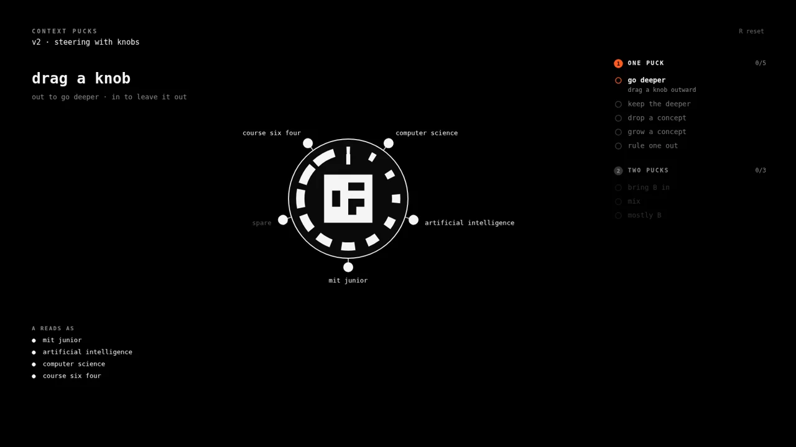

Interacting with AI should feel like a breath of fresh air
We are tired of screens, chat bots, and endless prompting. Why can't we grasp an agent and steer it in real time? We give handles to ideas — controls bound to the meaning of what a model generates, moving as you move them.
LineageFor over 30 years, TMG, led by Prof. Hiroshi Ishii, has bridged the digital and physical worlds.
Ambition100× the speed and bandwidth of human–machine interaction, without brain–computer interfaces.
Current focusHold That Thought: do people steering AI in real time become more creative, and more in control?

Draw on paper, point, and speak to compose images and objects. The physical desk is the editor.
Sun Chuanqi
One puck per idea. Pull, push, flip, and turn its knobs to steer what the AI generates.
Avril Cui
A living map of personal /now pages: all our complex lives all at once.
Connie Huang
What if language models ran at 60 frames per second?
Sun Chuanqi Hiroshi IshiiFaculty Advisor
Hiroshi IshiiFaculty Advisor Sun ChuanqiResearch Lead
Sun ChuanqiResearch Lead Quincy KuangResearch Lead
Quincy KuangResearch Lead Lucy LiResearch Lead
Lucy LiResearch Lead Avril CuiUROP
Avril CuiUROP Shuji HosokawaUROP
Shuji HosokawaUROP Fyona ShiUROP
Fyona ShiUROP Sophia LoiselleUROP
Sophia LoiselleUROPRecruiting UROPs for IAP and Spring 2027. Bring something you can contribute and an appetite for learning the rest.
New players welcome read the opening →